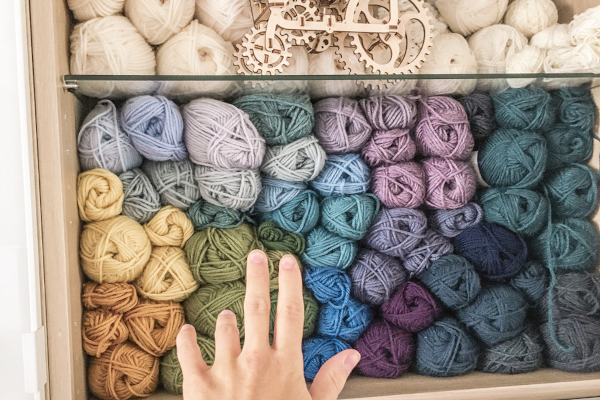

Włóczki do szydełkowania są dostępne w wielu kolorach, grubościach i składach. Można wybierać spośród naturalnych włókien, takich
jak bawełna, wełna czy jedwab, oraz syntetycznych, jak akryl czy poliester. W zależności od projektu, wybór odpowiedniej
włóczki ma duże znaczenie. Włóczki do szydełkowania są miękkie, przyjemne w dotyku i trwałe, co sprawia, że finalny efekt
jest estetyczny i wysokiej jakości. Włóczki do szydełkowania są dostępne w różnych kolorach, grubościach i rodzajach włókien.

Najczęściej używane są włóczki akrylowe, wełniane, bawełniane, czy mieszanki włókien naturalnych z syntetycznymi.
Wybór włóczki zależy od projektu, który chcemy wykonać - dla bardziej delikatnych wyrobów wybiera się cieńsze włóczki,
a dla grubych i ciepłych wyrobów - grubsze. Polecane przez nas włóczki do szydełkowania to: 100 % Bawełny włóczki
Alize Bella, włóczki Alize Bella Batik, włóczki Alize Bella Ombre Batik, włóczki Yarn Art Ideal, włóczki Yarn Art Creativ.